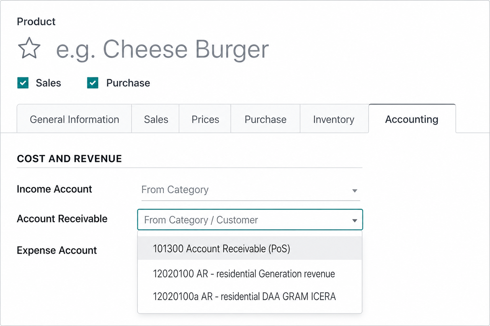

Product Account Receivable
Set Account Receivable on each product or category. Invoice journal items and
customer payments then post to those product receivable accounts automatically.

Overview
Odoo uses one customer receivable account by default. This module adds an
Account Receivable field on products and categories. When you
confirm a customer invoice, the receivable journal items are
created per product account receivable — not only the partner’s default AR.
Ideal for businesses that track receivables by product line, project type, revenue
stream, or cost center.
Key Features
-
Product & category receivable accounts
Configure Account Receivable on the product Accounting tab (and on categories).
Resolution order: product → category → customer → company default.
Fiscal positions are applied when mapping accounts.
-
Invoice journal items per product AR
Customer invoice receivable journal items use each product’s account receivable.
Mixed products create separate receivable / payment-term lines so the journal
entry and balance sheet reflect the correct AR accounts.
-
Payment allocation (FIFO)
Customer payments allocate counterpart amounts across open product receivable
residuals. Overpayments remain on the standard destination account.
-
Invoice report clarity
Customer invoice PDF/HTML shows the receivable account per product line and an
Account Receivable Summary when more than one account is used.
-
Multi-company ready
Receivable properties are company-dependent and respect the invoice company context.
Who Is This For?
- Companies that need receivable sub-ledgers by product or service type
- Organizations reporting AR separately for different business lines
- Accounting teams that currently fix receivable postings with manual journal entries
How It Works
- Configure Account Receivable on the product category and/or product.
- Create a customer invoice with those products.
- Confirm the invoice — receivable journal items use each product’s AR account.
- Register a customer payment — payment counterparts follow open AR residuals.
- Review the invoice report for line-level and summary receivable information.
Technical Notes
- Depends on the standard Invoicing / Accounting app (
account)
- Compatible with Odoo 19
- Does not replace partner receivable settings; extends them at product level
Support
Developed by Jonathan Bautista.
For questions, bugs, or customization requests, contact the author via the Apps Store
publisher profile.